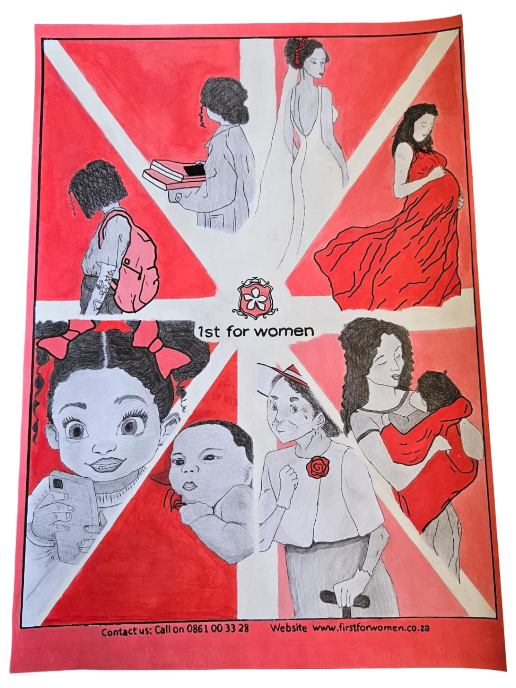
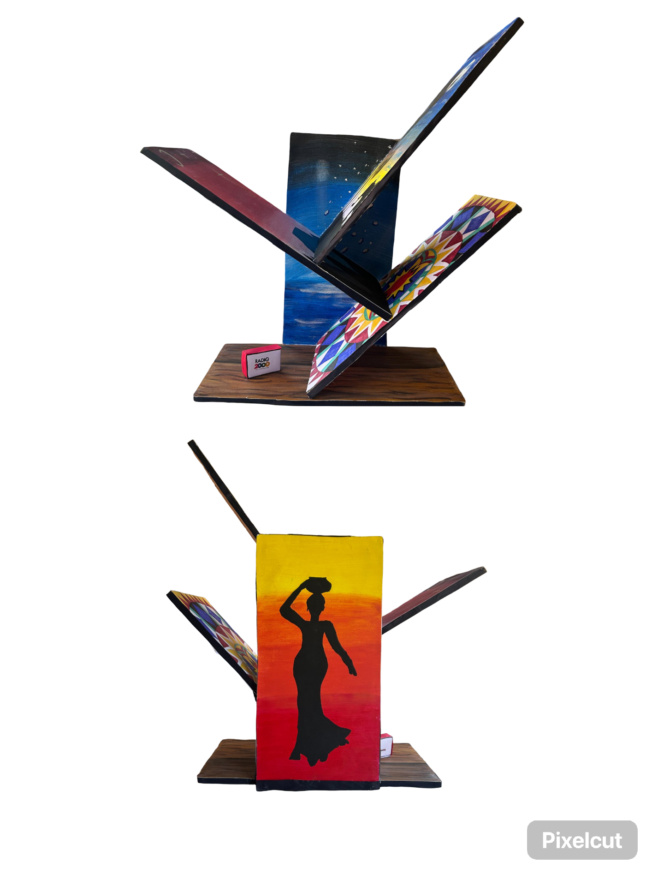

I'm learning web development and UX/UI design.
This is my first HTML project on GitHub.
I studied Graphic Design and Computer Applications Technology (CAT) in High School, which introduced me to basic computing, and problem-solving. I am now building on this foundation by learning UX/UI design front-end development.
My goal is to grow into a UX/UI designer and create user-friendly digital expiriences.

A conceptual poster exploring the seasons of a woman's life. The design uses colour, composition, change, and empowerment while remaining inclusive.

A physical bookshelf designed for a Children's Literacy Campaign (RSA), combining African-inspired visuals with functional structure to encourage reading and accessibility.